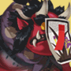
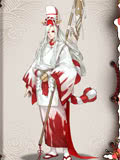

The table below shows the location of the Bounty Shikigamis in Onmyoji. Bounties refresh twice a day and is a good way to get Jades, Shards, and Coins. Using the table below, players can find the Bounties quicker. I will update this as often as I can.
Note that Challenge Stages will offer at least 14 units of a Shikigami. However, because of the scarcity of Challenge Tickets, I do not recommend using them unless the Bounty is hard to find.
Last update: Dec 25, 2018 - Hint updates for Vampira and begin adding JP information.
| 式神 | ヒント | Location |
|---|---|---|
Lantern Soul / プレースホルダー |
Chapter 1 - First Green Imp has 2 in Normal, Second Latern Carrier has 2 in Hard; Chapter 2 - Second Grave Digger has 2, First Parasit Ghost has 2; Chapter 3 - First Akashita has 2, Second Samurai X has 2; Chapter 5 - Boss Kamikui has 1; Chapter 6 - The two Lantern Soul has 1 each; Chapter 7 - Second Kappa has 1; [Recommend] Chapter 9 - First Lantern Boy has 3, Second Lantern Boy has 1, Boss Mouba has 1; Chapter 13 - Boss Kubinashi has 1; Chapter 17 - Boss Arakawa Lord has 1; Riverside Tales - Stage Three has 2; [Recommend] Wraith of Arakawa - Stage One to Three has 3 each; Umbrella's Guard - Stage Five and Seven has 1 each; Summer Poem - Stage Five has 2 [Recommend]Shshio's Wake - Stage Two has 3 Aoandon's Tale Stage - One has 3 Umibozu's Secret (unreleased) Stage - One has 3 Vampira's Secret (unreleased) Stage - stage Two has 3 Youko's Secret (unreleased) Stage - One has 3 |
|
 Akashita / プレースホルダー |
Chapter 3 - First Akashita has 1, Second Akashita has 1; Chapter 10 - Second Satori has 1; Chapter 15 - All enemies have 1 except Boss; Chapter 16 - First Akashita has 1, Second Akashita has 2, Third Akashita has 1; [Recommend] Chapter 23 - The two Hone Onna has 3 each; Maple's Bond - Stage Six and Seven have 1 each; Riverside Tales - Stage Three has 1; Cry Me a River - Stage Four to Six has 1 each; Wraith of Arakawa - Stage One to Three has 1 each; Tip of the Storm - Stage Five and Six have 1 each; [Recommend]Summer Poem - Stage One has 3; Stage Six has 1 [Recommend]Shshio's Wake - Stage Four has 3 Aoandon's Tale Stage - One has 1, Stage Three has 3 Umibozu's Secret (unreleased) Stage - Three has 2 Vampira's Secret (unreleased) Stage - stage One has 1, Stage Four has 3 Youko's Secret (unreleased) Stage - Two has 1 |
|
|  Red Imp / プレースホルダー |
紅鬼 - Red Ghost 拍屁股 - Slapping Butt |
Chapter 4 - First Umbrella has 3, Second Umbrella has 1 in Normal, The two Red Imp has 1 each; Chapter 5 - First Nurikabe has 2, Second Nurikabe has 3, the two Hahakigamis has 1 each; Chapter 6 - The two Chocho has 2 each; Chapter 7 - Boss Youko has 2; Chapter 11 - The two Ichimokuren Monk has 2 each; [Recommend] Chapter 13 - The three Gaki has 3 each, the three Umbrella has 1 each; [Recommend] Chapter 14 - The three Hahakigamis has 3 each; Boss Yumekui has 3; Chapter 15 - The three Green Imp has 2 each; Soul - Stage One has 2; Encounters - Kuro Mujou, Hone Onna, Shuzu, and Kyonshi Ani has 1 each; Umibozu has 2 Riverside Tales - Stage Six has 1; Summer Poem - Stage Two has 3 [Recommend]Shshio's Wake - Stage Three has 3; Stage Six has 1 Umibozu's Secret (unreleased) Stage - One has 1, Stage Five has 2 Vampira's Secret (unreleased) Stage - stage Three has 1 Youko's Secret (unreleased) Stage - One has 3, Stage Five has 1 |
 Green Imp / プレースホルダー |
Chapter 1 - The two Green Imp has 1 each, First Lantern Boy has 2; Chapter 2 - Boss Zashiki has has 2; Chapter 5 - Last Kanko has 3; [Recommend] Chapter 6 - The two Blue Imp has 3 each, Boss Kodokushi has 3; Chapter 8 - The two Green Imp has 1 each; Chapter 13 - The three Umbrella has 2 each; Chapter 15 - The three Green Imp has 1 each; Extra Chapter "Hell Agent in training" - Boss Kuro has 3; [Recommend] Encounter - Shuzu has 8, Gaki has 6, Hone Onna has 6, Kyonshi Ani has 4, and Sea Monnk has 1; Secret of the Evil Blade - Stage Six and Seven has 1 each; Riverside Tales - Stage Six has 1; Shshio's Wake - Stage Three has 3 Umibozu's Secret (unreleased) Stage - Five has 1 Vampira's Secret (unreleased) Stage - stage Three has 3 Youko's Secret (unreleased) Stage - One has 1 |
|
Yellow Imp / プレースホルダー |
鼓 - Drum 單眼 - Single Eye |
Chapter 3 - The two Yellow Imp has 1 each, the second Akashita has 1; Chapter 5 - Second Hahakigami has 2, First Kanko has 2; Chapter 8 - The two Green Imp has 2 each; Chapter 12 - The first Oguna has 1; Soul - Stage One has 1; [Recommend] Encounter - Umibozu has 3, Shuzu has 2, and Kyonshi Ani has 1; Maple's Bond - Stage Four and Five has 1 each; Riverside Tales - Stage Five/Six has 1 each; Tip of the Storm - Stage Two has 1; Umbrella's Guard - Stage Five has 1; [Recommend]Shshio's Wake - Stage One has 3 Umibozu's Secret (unreleased) Stage - One has 2, Stage Five has 1 Vampira's Secret (unreleased) Stage - stage Three has 3 Youko's Secret (unreleased) Stage - Four has 2, Stage Five has 1 |
Hahakigami / プレースホルダー |
Chapter 2 - The Hahakigami has 1; Chapter 3 - First Yellow Imp has 2 in Normal, has 1 in Hard; Chapter 4 - The two Hahakigamis brings 1 each, Boss Ame Onna has 2; Chapter 5 - The two Hahakigamis has 1 each; [Recommend] Chapter 6 - The two Lantern Soul has 3 each; Chapter 7 - The first Koi has 1, the second has 3; Chapter 8 - The two Momo has 1 each, the first Umbrella has 3, the second Umbrella has 2, Boss Momo has 1; Chapter 9 - The first Tesso has 3, and the second Rat has 2; Chapter 12 - The first Umibozu has 1; Chapter 14 - The three Hahakigamis has 1 each; [Recommend] Encounters - Futakuchi has 4, Kuro Mujou has 3, Hone Onna has 4, and Kyonshi Ani has 2; [Recommend] Tip of the Storm - Stage One has 4, Stage Two to Ten have 3 each; Umbrella's Guard - Stage One to Three have 3 each; Shshio's Wake - Stage One has 1 Aoandon's Tale Stage - Two has 3 Umibozu's Secret (unreleased) Stage - One has 3 Vampira's Secret (unreleased) Stage - stage Two has 3 Youko's Secret (unreleased) Stage - Four has 3 |
|
 Blue Imp / プレースホルダー |
青皮膚 - Blue skin 風箏 - Kite |
Chapter 2 - Boss Zashiki has 1; Chapter 5 - Boss Kamikui has 2; Chapter 6 - The two Blue Imp has 1 each; Chapter 8 - The two Green Imp has 1 each, Boss Momo has 1; [Recommend] Chapter 10 - The two Ushi no Toki has 2 each; Chapter 11 - Boss Momiji has 2; Extra Chapter "Hell Agent in training" - The two Momiji has 2 each; Soul - Stage One has 1; Encounter - Futakuchi has 3, Kyonshi Ani has 3, and Umibozu has 1; [Recommend] Secret of Evil Blade - Stage One to Three has 4 each, Stage Four to Nine has 3 each, and Stage Ten has 2; Riverside Tales - Stage Six has 1; Umbrella's Guard - Stage Four to Six has 1 each; Summer Poem - Stage Four and Five have 3 each Shshio's Wake - Stage Two has 3 Aoandon's Tale Stage - Four has 2 Umibozu's Secret (unreleased) Stage - Five has 1 Vampira's Secret (unreleased) Stage - stage Three has 2 Youko's Secret (unreleased) Stage - Five has 3 |
 Parasite / プレースホルダー |
Chapter 2 - Hahakigami has 1, the first Grave Digger has 2, and the two Parasit Ghosts has 1 each; Chapter 3 - Boss Hououga has 3; Chapter 5 - The two Kanko has 1 each; Chapter 7 - Boss Youko has 1 each; Chapter 11 - The first Warrior Soul has 3; Chapter 12 - Boss Yuki Onna has 1; [Recommend] Chapter 16 - The three Akashita has 3; [Recommend] Wraith of Arakawa - Stage One to Three has 3 each; Shshio's Wake - Stage Two has 1 Aoandon's Tale Stage - One has 1 Umibozu's Secret (unreleased) Stage - Two has 3 Vampira's Secret (unreleased) Stage - stage One has 3 Youko's Secret (unreleased) Stage - Two has 3 |
|
 Umbrella / プレースホルダー |
[Recommend]
Chapter 4 - The second Hahakigami brings 2 in Normal (3 in Hard), the
two Umbrellas Ghost has 1 each, the first Red Imp has 1, the second Red
Imp has 2; Chapter 8 - The two Umbrella has 1 each; Chapter 13 - The three Umbrella has 1 each; Encounter - Gaki has 1; [Recommend] Cry Me a River - Stage One to Three has 1 each, Stage Four to Six has 3 each; [Recommend] Umbrella's Guard - Stage Two has 3; Shshio's Wake - Stage One has 3 Aoandon's Tale Stage - Two has 3 Umibozu's Secret (unreleased) Stage - Two has 1, Stage Four has 3 Youko's Secret (unreleased) Stage - Three has 3 |
|
Grave Digger / プレースホルダー |
Chapter 2 - Hahakigami has 1, the two Grave Digger has 1 each, the second Parasite has 2; Chapter 12 - the two Doujo has 1 each; Chapter 23 - The two Grave Digger has 1 each; Boss Puppeteer has 3; Secret of the Evil Blade - Stage One has 3; Riverside Tales - Stage One/Two has 1 each; [Recommend] Cry Me a River - Stage One/Two/Three has 3 each; [Recommend] Wraith of Arakawa - Stage One has 3; [Recommend] Umbrella's Guard - Stage Four to Six has 3 each; Summer Poem - Stage Three and Five have 3 each Shshio's Wake - Stage One has 2 Umibozu's Secret (unreleased) Stage - Three has 3 Vampira's Secret (unreleased) Stage - stage One has 3 Youko's Secret (unreleased) Stage - Two has 3 |
|
 Lantern Boy / プレースホルダー |
Chapter 1 - the second Green Imp has 2, the two Lantern Boy has 1 each; Chapter 3 - the first Akashita has 1, the first Samurai X has 1 in Normal (2 in Hard), the second Samurai X has 1; Chapter 7 - the three Lantern Boys has 1 each; Chapter 8 - Boss Momo has 2; Chapter 9 - the two Lantern Boy has 1 each; Chapter 12 - the first Girl Sacirifce has 2; Chapter 15 - the three Lantern Boy has 1 each; [Recommend] Encounter - Gaki has 3, Futakuchi has 4, Kuro Mujou has 3, and Umibozu has 4; [Recommend]Riverside Tales - Stage One/Two has 3 each; [Recommend]Summer Poem - Stage One has 3 Shshio's Wake - Stage One has 1; Stage Five has 3 Aoandon's Tale Stage - Five has 3 Umibozu's Secret (unreleased) Stage - One has 1, Stage Four has 2 Vampira's Secret (unreleased) Stage - stage Two has 3 Youko's Secret (unreleased) Stage - One has 1 |
|
Nurikabe / プレースホルダー |
石 - Stone 青苔 - Moss Wall |
Chapter 3 - the first Yellow Imp has 1 in Normal (2 in Hard); Chapter 4 - first Hahakigami has 2, second Hahakigami has 1 in Normal, second Umbrella has 2 in Normal (3 in Hard), first Red Imp has 2 in Normal (3 in Hard); Chapter 5 - first Nurikabe has 1 in Normal (2 in Hard), second Nurikabe has 1, first Hahakigami has 2; Chapter 6 - the two Chocho has 1 each; Chapter 7 - first Kappa has 2, Boss Youko has 3; Chapter 8 - first Momo has 2, second Momo has 3; Chapter 11 - first Hitotsume has 1, first Gaki has 1; Chapter 12 - first Umibozu has 2, second Umibozu has 1; [Recommend] Chapter 14 - the three Nurikabes have 6 each; Soul - Stage One has 1; Encounter - Gaki has 1, Kuro Mujou has 4; Maple's Bond - Stage Four and Five have 1 each; Umbrella's Guard - Stage One to Three have 1 each; Aoandon's Tale Stage - One has 3 Umibozu's Secret (unreleased) Stage - One has 1 Vampira's Secret (unreleased) Stage - stage One has 3 Youko's Secret (unreleased) Stage - One has 3 |
Black Panther / プレースホルダー |
Chapter 5 - first Nurikabe has 1 in Normal (nothing in Hard); [Recommend] Riverside Tales - Stage Four has 3; |
|
 Zombie Dog / プレースホルダー |
Chapter 1 - First Green Imp brings 2 in Hard; [Recommend] Chapter 7 - first two Lantern Boy has 3 each, third Lantern Boy has 1, last Kappa has 2; Aoandon's Tale Stage - One has 3 Umibozu's Secret (unreleased) Stage - Two has 3 Vampira's Secret (unreleased) Stage - stage Five has 3 |
|
 Mio / プレースホルダー |
妖艳 - Seductive 红尾 - Red Tail 櫻花樹 - Cherry Tree 紅色 - Red |
Chapter 6 - the two Chocho has 1 each; Chapter 18 - the three Mio has 2 each; Soul - Stage One has 1, Sougenbi has 1; Maple's Bond - Stage Three has 1; Secret of Evil Blade - Stage Four has 3; Cry Me a River - Stage Seven has 1; [Recommend] Tips of the Storm - Stage One to Four have 4 each, Stage Five/Six have 3 each, and Stage Nine has 1; Cry Me a River - Stage Seven has 1; Summer Poem - Stage Six has 3 Aoandon's Tale Stage - Three has 1 Vampira's Secret (unreleased) Stage - stage Five has 2 Youko's Secret (unreleased) Stage - Five has 2 |
 Zashiki / プレースホルダー |
鬼火 - Orb 角 - Horn 財富 - Fortune 幸運 - Luck Wealth |
Chapter 2 - Boss Zashiki has 1; Chapter 7 - Boss Kanko has 2; Chapter 10 - the second Satori has 2, second Puppeteer has 2; Chapter 23 - the two Grave Diggers have 2 each; Soul - Stage Three has 2 and stage Six has 1; [Recommend] Raid/PVP - pretty much everyone has 1 so no need to use EN; Cry Me a River - Stage One has 3; Riverside Tales - Stage Two/Six has 1 each; Umibozu's Secret (unreleased) Stage - Two has 2 Youko's Secret (unreleased) Stage - Seven has 2 |
 Koi / プレースホルダー |
水池 - Pond 水泡 - Bubbles 尾巴 - Tail |
[Recommend] Chapter 7 - first Koi has 3, second Koi has 1, first Kappa has 1, the first Lantern Boy to the right has 2; Soul - Stage Two/Three/Nine has 1 each; Secret of the Evil Blade - Stage Eight to Ten have 1 each Riverside Tales - Stage Eight/Nine has 2, Stage Ten have 1 each; Wraith of Arakawa - Stage Four to Six have 1 each; Summer Poem - Stage Five and Nine have 2 each Shshio's Wake - Stage Two and Eight has 1 each Aoandon's Tale Stage - Six has 2 Umibozu's Secret (unreleased) Stage - Three/Seven/Eight/Nine have 1 each, Stage Four has 4, Stage Six has 2 Youko's Secret (unreleased) Stage - Five has 1 |
 Kyuumei Neko / プレースホルダー |
Chapter 1 - Boss Kyuumei Neko has 3; Chapter 15 - the three Lantern Boys has 2 each, Boss Kyonshi Imoto has 3; [Recommend] Chapter 18 - the three Kyuumei Nekos has 6 each, the three Mio has 2 each; Chapter 25 - The first Kodokushi has 1; Secret of Evil Blade - Stage Eight and Nine have 1 each, Stage Ten has 2; Cry Me a River - Stage One to Three have 3 each; Umbrella's Guard - Stage Nine has 2 each; Summer Poem - Stage Four has 2 Umibozu's Secret (unreleased) Stage - Six has 1 Vampira's Secret (unreleased) Stage - Four has 4 Youko's Secret (unreleased) Stage - Five has 2 |
|
 Tanuki / プレースホルダー |
Chapter 10 - first Satori has 3, first Puppeteer has 2; Chapter 17 - the three Tanukis has 1 each; Soul - Stage Nine has 1; [Recommend] Secret of the Evil Blade - Stage One to Three has 4 each, Stage Four to Ten has 3 each; Maple's Bond - Stage Seven has 1; Tip of the Storm - Stage Two has 3; Summer Poem - Stage Eight has 2 Aoandon's Tale Stage - Two has 2 Umibozu's Secret (unreleased) Stage - Four has 1 Vampira's Secret (unreleased) Stage - Three has 1 Youko's Secret (unreleased) Stage - Five has 2, Stage Six has 3 |
|
 Kappa / プレースホルダー |
水球 - Water ball 水流 - river 荷叶 - Water Lily Leaf Pond |
Chapter 7 - the two Kappas has 1 each; Chapter 23 - the two Grave Digger has 1 each; Soul - Stage Two has 1; Secret of Evil Blade - Stage Eight to Ten has 1 each; Riverside Tales - Stage One to Ten has 1 each; Cry Me a River - Stage Eight has 5 but this stage is hard; [Recommend] Wraith of Arakawa - Stage Four to Six has 3 each; Summer Poem - Stage Seven has 4 Shshio's Wake - Stage Two has 2 Umibozu's Secret (unreleased) Stage - Three/Six have 3 each, Stage Four/Eight/Nine/Ten have 1 each, Stage Five has 5, Stage Seven has 2 Vampira's Secret (unreleased) Stage - Three has 1 Youko's Secret (unreleased) Stage - Seven has 2 |
 Oguna / プレースホルダー |
翅膀 - Wings 雨衣 - Feathers 獻祭 - Offering |
Chapter 12 - the two Ogunas have 1 each; Soul - Stage Four has 1; Secret of the Evil Blade - Stage Nine has 2; [Recommend] Riverside Tales - Stage One has 3; Cry Me a River - Stage Ten has 1; Tip of the Storm - Stage Eight and Nine have 1 each; Tip of the Storm - Stage Eight and Nine have 1 each; Summer Poem - Stage 10 has 2 Aoandon's Tale Stage - Three has 3 Umibozu's Secret (unreleased) Stage - Eight has 1 Youko's Secret (unreleased) Stage - Seven has 1 |
 Doujo / プレースホルダー |
翅膀 - Wings 羽衣 - Feather coat 幼女 - Little girl |
[Recommend]Chapter 3 - first Samurai X has 2 in Normal (1 in Hard), second Akashita has 2, last Yellow Imp has 3; Chapter 11 - Boss Momiji has 1; Chapter 12 - first Doujo has 1, second Girl Sacifice has 3, second Oguna has 1; Soul - Stage Two has 2, Stage Four has 1; Riverside Tales - Stage One has 1; Wraith of Arakawa - Stage Two has 3; Summer Poem - Stage 10 has 2 Aoandon's Tale Stage - Three has 1 Umibozu's Secret (unreleased) Stage - Eight has 1 Youko's Secret (unreleased) Stage - Seven has 2 |
 Gaki / プレースホルダー |
Chapter 9 - Boss Mouba has 3; Chapter 11 - first Gaki has 1, second Gaki has 3; Chapter 13 - the three Gaki has 1 each; Chapter 16 - the three Gaki has 1 each; Soul - Stage Eight has 1; Encounter - Gaki has 3; [Recommend] Maple's Bond - Stage One to Three has 4 each, Stage Four to Ten has 3 each; Aoandon's Tale Stage - Five has 2 Umibozu's Secret (unreleased) Stage - Two has 1 Vampira's Secret (unreleased) Stage - Seven has 2 Youko's Secret (unreleased) Stage - Six has 2 |
|
 Kodokushi / プレースホルダー |
Poison Bugs |
Chapter 6 - Boss Kodokushi has 1; [Recommend] Soul - Stage Six has 1; Cry Me a River - Stage Seven to Ten has 1 each; [Recommend]Summer Poem - Stage Three has 3 Aoandon's Tale Stage - Two has 1 Vampira's Secret (unreleased) Stage - Two has 1 |
 Karasu Tengu / プレースホルダー |
薙刀 - Naginata Blade 翅膀 - Wings 面具 - Mask |
Chapter 3 - the two Akashitas has 1 each; Chapter 9 - the two Yamausagi has 1 each, Boss Mouba has 2; [Recommend] Chapter 12 - the second Umibozu has 2, the two Oguna has 2 each (max 4 each since Oguna can revive); Chapter 17 - the three Karasu Tengu has 1 each; Chapter 18 - Boss Ootengu has 3; Chapter 25 - The third Samurai X has 3; Soul - Stage Six has 1; Maple's Bond - Stage Four has 2 and Stage Nine has 1; Secret of Evil Blade - Stage Six/Seven have 1 each; Riverside Tales - Stage Nine has 2; Cry Me a River - Stage Seven to Nine have 3 each, Stage Ten has 5; Wraith of Arakawa - Stage Four has 4; Tip of the Storm - Stage Five has 4; Umbrella' Guard - Stage Three has 2; Summer Poem - Stage Five has 3 Aoandon's Tale Stage - Two has 1 Umibozu's Secret (unreleased) Stage - Five has 1, Stage Nine has 3 Vampira's Secret (unreleased) Stage - Seven has 2 Youko's Secret (unreleased) Stage - Three has 1 |
 Kamikui / プレースホルダー |
Chapter 5 - Boss Kamikui has 1; Chapter 10 - Boss Shuten Doji has 2; Chapter 21 - The three Kamikuis have 1 each; Soul - Stage Seven has 1; [Recommend] Riverside Tales - Stage Three has 3; Summer Poem - Stage Two has 1 Shshio's Wake - Stage Four and Five has 1 each; Six has 4; Seven/Eight has 3; Nine/Ten has 2 Aoandon's Tale Stage - Four/Ten have 1 each Vampira's Secret (unreleased) Stage - Four has 1 Youko's Secret (unreleased) Stage - Two has 1 |
|
 Kusa / プレースホルダー |
蒲公英 - Dandelion 治療 - healing Ding |
Chapter 21 - Boss Kusa has 2; Chapter 23 - Boss Kusa has 3; Soul - Stage Two/Nine/Ten has 1 each; [Recommend] Soul Sougenbi - has 4, same for all three diffculties; Riverside Tales - Stage Four and Nine has 1 each; Cry Me a River - Stage Four/Nine has 1 each, Stage Ten has 3; Discovery - Kusa has 3; Raid/PvP - Quite common amongst low level players Summer Poem - Stage Eight has 5 Shshio's Wake - Stage Three to Ten has 1 each Aoandon's Tale Stage - Seven has 1 Umibozu's Secret (unreleased) Stage - Eight has 2 Youko's Secret (unreleased) Stage - Six has 2 |
 Warrior Soul / プレースホルダー |
Chapter 11 - the two Warrior Souls has 1 each; Chapter 12 - Boss Yuki Onna has 2; Chapter 25 - The second Kodokushi has 2; [Recommend] Riverside Tales - Stage Three has 3; [Recommend] Cry Me a River - Stage Three has 3; Umibozu's Secret (unreleased) Stage - Four/Eight have 1 each Vampira's Secret (unreleased) Stage - One has 1, Stage Seven has 2 Youko's Secret (unreleased) Stage - Two has 1 |
|
 Kyonshi Imoto / プレースホルダー |
[Recommend] Chapter 12 - Boss Yuki Onna has 1, and can use Jumping Bro Older revival trick; Chapter 15 - Boss Kyonshi Imoto Younger has 1; Maple's Bond - Stage Two has 1; Riverside Tales - Stage Nine has 1; Umbrella's Guard - Stage Four to Six have 1 each; Summer Poem - Stage Six has 1 Shshio's Wake - Stage Three and Five has 1 each Umibozu's Secret (unreleased) Stage - Seven has 2 Vampira's Secret (unreleased) Stage - Six has 2 Youko's Secret (unreleased) Stage - Three/Five/Ten have 1 each |
|
 Samurai X / プレースホルダー |
剑 - Katana 坚甲 - Armor 石化 - Petrified Harden |
Chapter 3 - the two Samurai Xs have 1 each; Chapter 10 - Boss Shuten Doji has 1; Chapter 21 - Second Enenra has 1, The second and third Kamikui has 1 each; Chapter 25 - The three Samurai X have 1 each; Soul - Hydra (Orochi) Stage Two has 1, Sougenbi has 1; Raid/PVP - Quite common in mid tier (could be changed with meta); Maple's Bond - Stage Four/Five/Eight/Ten has 1 each; Riverside Tales - Stage Four and Ten has 1 each; [Recommend] Cry Me a River - Stage Seven has 4; Shshio's Wake - Stage One has 1; Eight has 2 Aoandon's Tale Stage - Four has 1 Umibozu's Secret (unreleased) Stage - Seven has 1 Vampira's Secret (unreleased) Stage - Seven has 1 Youko's Secret (unreleased) Stage - Six/Ten have 1 each |
 Ushi no Toki - 丑时之女 |
稻草人 - Scarecrow 咒锥 - Curse Nail Straw Doll Cursed Dart |
Chapter 10 - the two Ushi no Tokis has 1 each; Chapter 21 - The first Kamikui has 3, the second and third Kamikuis have 2 each; [Recommend] Riverside Tales - Stage Four has 2; Soul - Stage Five/Seven has 1 each; Maple's Bond - Stage Four and Nine has 1 each; Riverside Tales - Stage Four has 2 each; Cry Me a River - Stage Four to Six has 1 each; Aoandon's Tale Stage - Four/Ten have 1 each Vampira's Secret (unreleased) Stage - Ten has 1 Youko's Secret (unreleased) Stage - Six has 2, Stage Nine has 1 |
 Hitotsume / プレースホルダー |
单眼 - Single Eye 石菩萨 - Stone Buddha 金刚经 - Diamond Sutra |
[Recommend] Chapter 11 - the second Warrior Souls has 3, the two One-Eyed Monk has 1 each in Normal (2 each in Hard); Chapter 25 - The second Warrior Soul has 1; The second Itsumade has 2; Soul - Stage One/Five has 1 each; Maple's Bond - Stage Eight to Ten has 1 each; Riverside Tales - Stage Two has 1; Tip of the Storm - Stage Four has 1; Summer Poem - Stage Nine has 1 Shshio's Wake - Stage Three/Five/Ten have 1 each Aoandon's Tale Stage - Five has 1 Youko's Secret (unreleased) Stage - Two has 1 |
 Tesso / プレースホルダー |
Chapter 9- first Tesso has 1, second Tesso has 2, second Lantern Boy has 2, second Yamausagi has 1; [Recommend] Encounter - Coin Monster has 16 (best way is to line up in the team menu); Maple's Bond - Stage Five has 2; Cry Me a River - Stage One to Three has 1; Umibozu's Secret (unreleased) Stage - Six has 1 Youko's Secret (unreleased) Stage - Seven has 1 |
|
 Shuzu / プレースホルダー |
扇子 - Fan 水 - Water 贝壳 - Shell 尾巴 - Tail |
Chapter 22 - Boss Jorogumo has 1; Chapter 25 - The two Samurai X have 1 each; Soul - Stage Three/Eight/Nine/Ten has 1 each, Sougenbi has 1; [Recommend] Ecounter - Shuzu has 3; Raid/PVP - Not very common; Maple's Bond - Stage Six to Eight have 1 each, Stage Nine/Ten have 2 each; Secret of Evil Blade - Stage Ten has 1; Riverside Tales - Stage Eight/Ten has 2 each; Cry Me a River - Stage Eight has 1; Wraith of Arakawa - Stage Seven has 1; Tip of the Storm - Stage Four/Five/Ten have each; Shshio's Wake - Stage Ten has 1 Aoandon's Tale Stage - Seven/Nine/Ten have 1 each Umibozu's Secret (unreleased) Stage - Two has 1 Vampira's Secret (unreleased) Stage - Seven/Nine have 1 each Youko's Secret (unreleased) Stage - Seven has 1 |
 Ame Onna / プレースホルダー |
淚珠 - Tears 雨 - Rain 傘 - Umbrella |
Chapter 4 - Boss Ame Onna has 1; Soul - Stage Six has 1; [Recommend] Secret of the Evil Blade - Stage Three has 3; Maple's Bond - Stage Six has 2; Cry Me a River - Stage One to Ten has 1 each; Riverside Tales - Stage Seven/Nine has 1 each; Aoandon's Tale Stage - Nine has 1 Umibozu's Secret (unreleased) Stage - Five has 3, Stage Seven/Ten have 2 each Youko's Secret (unreleased) Stage - Four has 1 |
 Kanko / プレースホルダー |
Chapter 5 - first Kanko has 2, second Kanko has 1; Chapter 7 - the three Lantern Boys have 1 each; Chapter 11 - second One-Eyed Monk has 1, first Gaki has 2, second Gaki has 1; Extra Chapter "Hell Agent in training" - the three Korokas have 2 each; Soul - Stage Eight has 1; [Recommend] Maple's Bond - Stage One to Three has 4 each, Stage Four to Ten has 3 each; Cry Me a River - Stage Nine has 5 but the fight is difficult; Riverside Tales - Stage Seven has 3; Wraith of Arakawa - Stage Three has 3; Summer Poem - Stage Two has 3 Aoandon's Tale Stage - Six has 1 Umibozu's Secret (unreleased) Stage - Six has 1, Stage Ten has 2 Vampira's Secret (unreleased) Stage - Six has 3, Stage Ten has 1 Youko's Secret (unreleased) Stage - Six has 3 |
|
 Yamausagi / プレースホルダー |
[Recommend] Chapter 9 - first Yamausagi has 4, second Yamausagi has 3; Chapter 13 - Boss Kubinashi has 1; Chapter 16 - the three Gakis have 1 each; Chapter 17 - Boss Arakawa Lord has 1; Chapter 23 - The three Moubas have 3 each; Chapter 25 - The two Samurai X have 2 each; Soul - Stage Seven has 1; Riverside Tales - Stage Five has 1; Wraith of Arakawa - Stage Five has 4; PVP/Raid - Very Common Shshio's Wake - Stage Nine and Ten have 1 each Aoandon's Tale Stage - Seven has 2 Youko's Secret (unreleased) Stage - Six has 1, Stage Nine has 5 |
|
 Chocho / プレースホルダー |
手鼓 - Mini Drum 小妖精 - Little Fairy 可愛 - Cute Drum |
Chapter 6 - the two Butterfly Fairies have 1 each; Chapter 8 - Boss Momo has 2; Chapter 25 - The second Itsumade has 1; Soul - Stage Three/Eight has 1 each, Sougenbi has 1; [Recommend] Secret of the Evil Blade - Stage Two has 3, Stage Four/Five have 1 each; Cry Me a River - Stage Seven has 1; Riverside Tales - Stage Five has 2; Wraith of Arakawa - Stage Four to Six have 3 each; Umbrella's Guard - Stage One to Three have 1 each; Summer Poem - Stage One has 1 Shshio's Wake - Stage Three and Ten have 1 each Aoandon's Tale Stage - Five has 2, Stage Ten has 1 Umibozu's Secret (unreleased) Stage - Eight has 1 Youko's Secret (unreleased) Stage - Two has 1 |
 Yamawaro / プレースホルダー |
单眼 - Singe eye 石锤 - Stone hammer 怪力 - Strong |
Chapter 8 - the second Umbrellas have 1; Chapter 16 - the three Gakis have 2 each; Soul - Stage One has 1; Maple's Bond - Stage Three has 2; [Recommend] Riverside Tales - Stage Two has 3; Tip of the Storm - Stage Three has 3; Summer Poem - Stage Four has 1 Shshio's Wake - Stage Five has 3 Aoandon's Tale Stage - Six has 1, Stage Seven/Nine have 2 each Umibozu's Secret (unreleased) Stage - Six has 2 Youko's Secret (unreleased) Stage - Four has 4, Stage Seven has 2 |
 Kubinashi / プレースホルダー |
Chapter 13 - the last Gaki has 1. the last Umbrella has 1, Boss Kubinashi has 1; Maple's Bond - Stage Three has 2; Riverside Tales - Stage Seven has 3; Cry Me a River - Stage Two has 3; [Recommend] Tip of the Storm - Stage One has 3; Aoandon's Tale Stage - Six has 1, Stage Seven has 2 Umibozu's Secret (unreleased) Stage - Six/Eight have 1 each Youko's Secret (unreleased) Stage - Four has 1 |
|
 Satori / プレースホルダー |
Chapter 10 - the two Satoris have 1 each, the two Puppeteers have 1 each; Chapter 11 - Boss Momiji has 2; Extra Chapter "Hell Agent in training" - the two Momiji has 3 each; Soul - Stage Ten has 1; [Recommend] Maple's Bond - Stage One has 3; Riverside Tales - Stage Four has 3; Cry Me a River - Stage Four to Six has 3 each; Umbrella's Guard - Stage One to Three has 3 each; Summer Poem - Stage Three has 1 Shshio's Wake - Stage Three has 1 Aoandon's Tale Stage - Four has 4, Stage Seven has 2 Vampira's Secret (unreleased) Stage - Ten has 2 |
|
Jikikaeru / プレースホルダー |
二筒 - Mahjong 瓷 - Ceramic 出千 - Cheat Gambling |
Chapter 4 - Boss Ame Onna has 1; [Recommend] Soul - Stage Three has 1; Riverside Tales - Stage Nine has 3; Cry Me a River - Stage Ten has 5 but very difficult; Tip of the Storm - Stage Three has 1; Summer Poem - Stage Four has 1 Aoandon's Tale Stage - Five has 2 Vampira's Secret (unreleased) Stage - Ten has 5 Youko's Secret (unreleased) Stage - Four/Ten have 1 each |
 Yuki Onna / プレースホルダー |
Chapter 8 - the two Sakura Fairies have 1 each; [Recommend] Chapter 12 - the two Doujo has 1 each, Boss Yuki Onna has 2; Maple's Bond - Stage six has 1; Wraith of Arakawa - Stage Six has 4; Tip of the Storm - Stage Five/Nine/Ten has 1 each; Shshio's Wake - Stage Six has 1 Youko's Secret (unreleased) Stage - Seven has 1 |
|
 Inugami / プレースホルダー |
劍 - Katana 雀 - Bird 屋 - House 守護 - Protection Purple Dog |
[Recommend]Chapter 10 - the second Satori has 1, the second Puppeteer has 1; Soul - Stage Four has 1; Maple's Bond - Stage Eight to Ten have 1 each; Summer Poem - Stage Nine has 1 Aoandon's Tale Stage - Ten has 1 Vampira's Secret (unreleased) Stage - Five has 1 Youko's Secret (unreleased) Stage - Eight has 1 |
 Hone Onna / プレースホルダー |
骷髅 - Bone 怨恨 - Hatred 剑 - Sword |
Chapter 10 - Boss Shuten Doji has 2; Chapter 11 - Boss Momiji has 1; Chapter 13 - Boss Kubinashi has 1; Chapter 17 - Boss Arakawa Lord has 1; Chapter 23 - the two Hone Onna have 1 each; Chapter 24 - Boss Hone Onna has 1 Chapter 25 - Boss has 1 Soul - Stage Five has 1, Stage Six has 2; Demon Seal - Hone Onna has 3; Secret of the Evil Blade - Stage Five has 1; Maple's Bond - Stage Five has 1; [Recommend] Cry Me a River - Stage Four has 4; Summer Poem - Stage Four has 2 Aoandon's Tale Stage - Ten has 1 Vampira's Secret (unreleased) Stage - Seven has 2 Youko's Secret (unreleased) Stage - Eight has 1 |
 Umibozu / プレースホルダー |
漁夫 - Fisherman 海 - Sea 鬍鬚 - Beard 杖 - Staff Mustache Cane |
Chapter 12 - the two Umibozus have 1 each; Chapter 24 - The two Vampiras have 3 each Soul - Stage Three has 1; [Recommend] Encounter - Umibozu has 3; Riverside Tales - Stage Eight has 3; Wraith of Arakawa - Stage Four to Six have 1 each, Stage Eight has 5; Summer Poem - Stage Ten has 3 Shshio's Wake - Stage Eight has 2 Umibozu's Secret (unreleased) Stage - One to Ten have 1 each Vampira's Secret (unreleased) Stage - Seven has 2 Youko's Secret (unreleased) Stage - Ten has 1 |
 Kyonshi Ani / プレースホルダー |
蠟燭 - Candles 棺材 - Coffins |
Chapter 10 - Boss Shuten Doji has 1; Chapter 12 - Boss Yuki Onna has 2; Chapter 24 - The two Jourogumo have 3 each; Soul - Stage Five has 1; Maple's Bons - Stage Two has 1; [Recommend] Encounter - Jumping Bro Older has 3 Maple's Bond - Stage Two has 1; Umbrella's Guard - Stage Four to Six has 1 each; Summer Poem - Stage Seven has 1 Shshio's Wake - Stage Nine has 1 Aoandon's Tale Stage - Six has 3 Vampira's Secret (unreleased) Stage - Six has 1 Youko's Secret (unreleased) Stage - Ten has 5 |
Puppeteer / プレースホルダー |
人偶 - Puppet 操縱 - Control |
[Recommend] Chapter 10 - the two Ushi no Tokis have 1 each, the two Puppeteers have 1 each; Chapter 23 - Boss Puppeteer has 2; Soul - Stage Five has 1; Secret of the Evil Blade - Stage Five has 1 Shshio's Wake - Stage Seven has 1 [Recommend]Vampira's Secret (unreleased) Stage - Five has 2 Youko's Secret (unreleased) Stage - Eight has 2 |
 Momiji / プレースホルダー |
美麗的女妖怪 - A beautiful fairy 身上的飾品 - Accessories |
Chapter 11 - Boss Momiji has 2; [Recommend]Maple's Bond - Stage One to Ten has 1 each; Riverside Tales - Stage Five has 1; Summer Poem - Stage Seven has 2 Vampira's Secret (unreleased) Stage - Eight has 2 Youko's Secret (unreleased) Stage - Eight has 2 |
 Hangan / プレースホルダー |
Chapter 16 - Boss Hangan has 1; [Recommend] Soul - Stage Eight has 1; Secret of the Evil Blade - Stage Seven has 1; Riverside Tales - Stage Seven has 1; Cry Me a River - Stage Seven has 1; Umbrella's Guard - Stage Seven has 3, Eight to Ten have 2 each; Summer Poem - Stage Eight has 2 Shshio's Wake - Stage Nine has 1 Umibozu's Secret (unreleased) Stage - Nine has 1 Vampira's Secret (unreleased) Stage - Ten has 1 |
|
 Sakura / プレースホルダー |
[Recommend] Chapter 8 - the two Sakura has 1 each, Boss has 1; Riverside Tales - Stage Five/Ten has 1 each; Secret of the Evil Blad - Stage Six has 1; Umbrella's Guard - Stage Six has 1; Summer Poem - Stage Nine has 1 Umibozu's Secret (unreleased) Stage - Nine has 2, Stage Ten has 1 Youko's Secret (unreleased) Stage - Eight has 1 |
|
 Yumekui / プレースホルダー |
鈴鐺 - Bell 噩夢 - Nightmare |
[Recommend] Chapter 14 - last Nurikabe has 1, Boss Yumekui has 5; Soul - Stage Four has 2, Stage Nine has 1; Riverside Tales - Stage Seven has 1; Shshio's Wake - Stage Seven has 1 Aoandon's Tale Stage - Eight has 1 Youko's Secret (unreleased) Stage - Nine has 1 |
 Hououga / プレースホルダー |
Chapter 3 - Boss Hououga has 1; Chapter 20 - the second Hannya has 1; [Recommend] Soul - Stage Seven has 1; Riverside Tales - Stage Five has 1; Umbrella's Guard - Stage Four and Seven to Ten has 1 each; Discovery - Hououga has 3; Aoandon's Tale Stage - Nine has 1 Umibozu's Secret (unreleased) Stage - Ten has 1 |
|
 Momo / プレースホルダー |
花 - Flower 舞 - Dance |
Chapter 8 - Boss Momo has 1; [Recommend] Soul - Stage Three has 1; Secret of the Evil Blade - Stage Six/Ten has 1 each; Maple's Bond - Stage Eight to Ten has 1 each; Riverside Tales - Stage Five has 1, Stage Ten has 2; Wraith of Arakawa - Stage Ten has 1; Tip of the Storm - Stage Eight has 5; Umbrella's Guard - Stage Eight has 2, Nine has 1; Shshio's Wake - Stage Ten has 1 Aoandon's Tale Stage - Eight has 1 Youko's Secret (unreleased) Stage - Seven has 1 |
 Mouba / プレースホルダー |
湯碗 - Soup Bowl 琴 - Guitar 牙牙 - Teeth |
Chapter 9 - Boss Mouba has 2; Chapter 23 - All three Mouba have 1 each; [Recommend] Soul - Stage Five has 2, Stage Six has 1; Riverside Tales - Stage Five has 1; Umbrella's Guard - Stage Seven has 1, Eight has 2, Nine/Ten have 3 each; Summer Poem - Stage Three has 1 Shshio's Wake - Stage Nine has 2 Aoandon's Tale Stage - Nine/Ten have 1 each Vampira's Secret (unreleased) Stage - Eight has 2 Youko's Secret (unreleased) Stage - Ten has 1 |
 Vampira / プレースホルダー |
血 - Blood コウモリ - Bat |
Chapter 21 - the two Vamps/Boss Kusa have 1 each; Chapter 22 - Boss Jorogumo has 1; Chapter 24 - The two Vampiras have 1 each; Soul - Stage Two has 1; Raid/PVP - Not Common; [Recommend] Maple's Bond - Stage Seven has 2, Stage Ten has 1; Riverside Tales - Stage Eight has 2; Cry Me a River - Stage Ten has 5 but the fight is difficult; Rip of the Storm - Stage Ten has 5; Umbrella's Guard - Stage Ten has 2; Shshio's Wake - Stage Ten has 2 Aoandon's Tale Stage - Ten has 1 Vampira's Secret (unreleased) Stage - One to Nine has 1 each |
 Kuro Mujou / プレースホルダー |
黑鐮 - Black Scythe 短刀 - dagger Tanto Sword |
Chapter 16 - Boss Hangan has 1; Soul - Stage Four has 1; Chapter 24 - The three Kiyohime have 2 each; Demon Seal - Kuro Mujou has 3; Secret of the Evil Blade - Stage Seven has 1; [Recommend] Riverside Tales - Stage Six has 3; Summer Poem - Stage Two has 1 Aoandon's Tale Stage - Eight has 1 Vampira's Secret (unreleased) Stage - Ten has 1 |
|  Shiro Mujou / プレースホルダー |
冥界 - Hell 白 - White 奪命 - Take life |
Chapter 16 - Boss Hangan has 1; Chapter 24 - The three Kiyohime have 1 each; Boss has 1; [Recommend] Soul - Stage Four has 1; Secret of the Evil Blade - Stage Seven has 1; Riverside Tales - Stage Six has 1; Cry Me a River - Stage Nine has 2 but the fight is difficult; Tip of the Storm - Stage Six has 2; Umbrella's Guard - Stage Six has 1; Summer Poem - Stage One has 1 Aoandon's Tale Stage - Eight has 1 Vampira's Secret (unreleased) Stage - Nine has 2, Stage Ten has 1 |
 Kamaitachi / プレースホルダー |
錘子 - Hammer 釘耙 - plow 劍 - Katana Rake Sword |
Soul - Stage Five has 1; Raid/PVP - Common; Riverside Tales - Stage Four has 1; Tip of the Storm - Stage Seven/Eight has 1 each; Umbrella's Guard - Stage Nine has 1; [Recommend] Challenge - Chapter 18 Kamaitachi has 14 (I recommend this because you need his shards anyways); Summer Poem - Stage One to Six has 1; Seven has 2; Eight has 1; Ten has 3 Aoandon's Tale Stage - Eight has 1 Umibozu's Secret (unreleased) Stage - Eight/Ten have 1 each |
 Youko / プレースホルダー |
紙扇 - Paper Fan 書生 - Scholar 面具 - Mask |
Chapter Seven - Boss Youko has 2; [Recommend] Soul - Stage Two has 1, Sougenbi has 1; Secret of the Evil Blade - Stage Ten has 2; Riverside Tales - Stage Nine/Ten have 1 each; Tip of the Storm - Stage Eight has 5; Summer Poem - Stage Nine has 3 Aoandon's Tale Stage - Nine has 1 Vampira's Secret (unreleased) Stage - Six has 1 Youko's Secret (unreleased) Stage - One to Ten have 1 each |
 Ootengu / プレースホルダー |
羽毛 - Feather 笛子 - Flute 扇 - Fan 大翅膀 - Big Wings 風 - Wind |
Chapter 15 - the last Lantern Boy has 1; Chapter 18 - first Mio has 1, Boss Ootengu has 1; Soul - Stage Four has 1, Stage Ten has 2; [Recommend] Raid/PVP - Many players use him; Secret of the Evil Blade - Stage Eight to Ten has 1 each; Riverside Tales - Stage Nine has 1; Wraith of Arakawa - Stage Ten has 1; Tip of the Storm - Stage Eight/Nine have 2, all other stages have 1 each; Umbrellas Guard - Stage Four has 1; Shshio's Wake - Stage Six has 1 Aoandon's Tale Stage - Nine/Ten have 1 each |
 Shuten Doji / プレースホルダー |
Chapter 10 - Boss Shuten Doji has 2; Chapter 22 - Boss Jorogumo has 1 [Recommend] Soul - Stage Seven/Ten has 1; Raid/PVP - not common; Maple's Bond - Stage Seven to Ten have 1 each; Tip of the Storm - stage Nine has 1; Umbrella's Guard - Stage Eight has 2; |
|
Enma / プレースホルダー |
云 - Cloud 鬼面 - Ghost Mask 冥界 - Hell |
[Recommend] Soul - Stage Six has 1; Riverside Tales - Stage Nine has 1; Summer Poem - Stage Six has 1 Shshio's Wake - Stage Nine has 1 Vampira's Secret (unreleased) Stage - Ten has 1 |
 Arakawa Lord / プレースホルダー |
Chapter 17 - Boss Arakawa Lord has 1; [Recommend] Soul - Stage Seven has 2; Riverside Tales - Stage Eight has 2; Wraith of Arakawa - All stages have 1 each; Vampira's Secret (unreleased) Stage - Nine has 1 |
Showing 1 to 64 of 64 entries